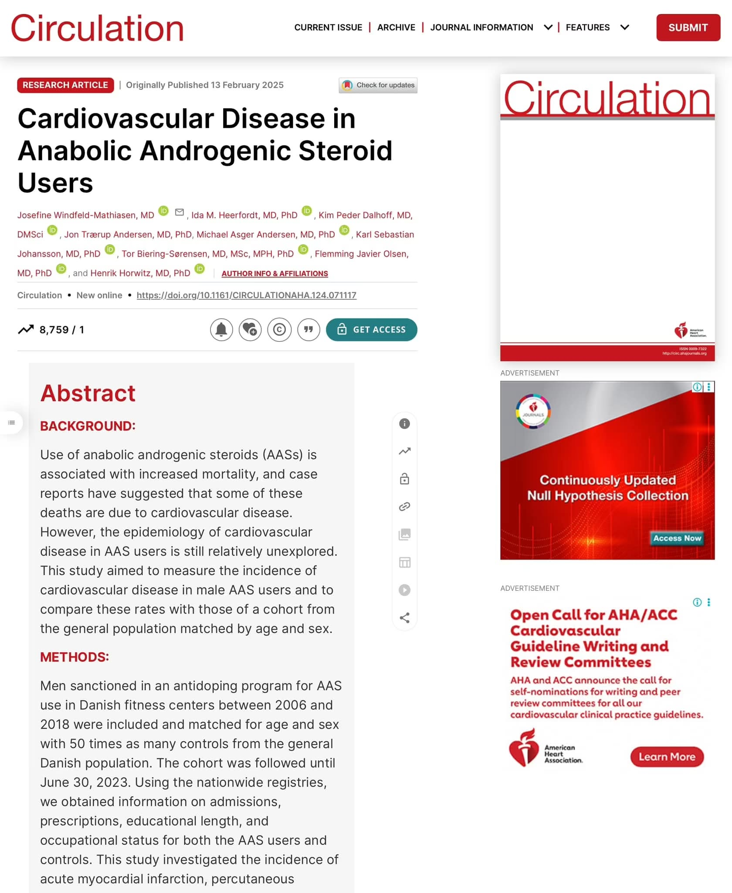

Exogenous testosterone (taken in excess amounts) is also an anabolic steroid.
#testosteroneHd #trtHD #anabolicsteroidsHD #bodybuildingHD #cvdHD #cardiomyopathyHD
Louis notes that excess exogenous testosterone is also an anabolic steroid and shares Luigi Fontana's summary of a Circulation study comparing 1,189 anabolic androgenic steroid users with 59,450 controls over 11 years. Users had several-fold higher risks of heart attack, revascularization, clots, arrhythmias, cardiomyopathy and heart failure.
Exogenous testosterone (taken in excess amounts) is also an anabolic steroid.
#testosteroneHd #trtHD #anabolicsteroidsHD #bodybuildingHD #cvdHD #cardiomyopathyHD
🚨 New Study: Anabolic Steroid Use & Heart Disease Risk 🚨
A new study in Circulation has confirmed what many in the medical and fitness communities have long suspected—anabolic androgenic steroids (AASs) significantly increase the risk of cardiovascular disease.
🔎 Key Findings (11-year follow-up, 1,189 AAS users vs. 59,450 controls):
⚡ 3x higher risk of heart attack
⚡ 2.95x higher risk of requiring stents or bypass surgery
⚡ 2.4x higher risk of blood clots (venous thromboembolism)
⚡ 2.3x higher risk of arrhythmias
⚡ 8.9x higher risk of cardiomyopathy
⚡ 3.6x higher risk of heart failureWhile AAS use has long been associated with increased mortality, this study provides strong epidemiological evidence linking it directly to life-threatening cardiovascular diseases.
💡 Takeaway: The risks of performance-enhancing drugs extend far beyond muscle growth. Prioritizing heart health is crucial for anyone considering or currently using AAS.
Let’s continue to push for awareness, education, and safer fitness choices.
#CardiovascularHealth #SteroidRisks #HeartHealth #MedicalResearch #Fitness #bodybuilding #weightlifting
👉
scholar.google.com.auLuigi Fontana, MD, PhD, FRACPUniversity of Trento - Cited by 43,149 - dietary restriction - fasting - exercise - lifestyle medicine - healthy longevityscholar.google.com.au
🔗
youtube.comLink to youtube.comyoutube.comLet’s shift the focus from merely treating ‘chronic disease’ to promoting ‘chronic health’.


Louis shares Luigi Fontana's summary of a long-term cohort of 1,189 anabolic androgenic steroid users versus 59,450 matched controls, showing sharply higher rates of cardiovascular events even in recreational gym-goers. He warns against pushing androgen levels excessively high.

Dr. Karl Nadolsky summarizes a study of 247 men: psychiatric diagnoses were 2.5-fold higher in current and past androgen users, and past users reported worse mood, anxiety and sexual function. Psychiatric comorbidity, more than low testosterone, tracked with depression and anxiety.

Reviews the evidence on statins and cancer. A 2012 meta-analysis of 134,537 participants in 22 RCTs found identical cancer incidence (1.4% per year) and mortality (0.5% per year) in statin users and non-users, and a 2023 meta-analysis of 35 RCTs found the same. Anticancer effects in specific contexts remain preclinical or suggestive.
A video from a medical-education channel on how urolithin A, made by gut bacteria from pomegranate and walnut ellagitannins, may help the stiff heart of HFpEF through mitochondrial quality control. The post describes the work as pre-clinical.

Luigi Fontana's summary of an NEJM trial of lepodisiran, an siRNA that blocks hepatic Lp(a) production. At the 400 mg dose Lp(a) fell by 93.9% placebo-adjusted, lasting up to a year, with only mild injection-site reactions. It offers a potential option for people with genetically high Lp(a) who cannot lower it with lifestyle or standard drugs.

A Circulation pilot study led by Vanderbilt found participants treated with the SGLT2 inhibitor empagliflozin had reduced monocyte-platelet aggregates, clusters of immune cells and platelets linked to cardiovascular damage. It suggests diabetes drugs may also reduce vascular inflammation, though this is a small pilot.